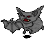

|
Historie:
Hier die wichtigsten Stationen im Leben des Tom Bombadil:

...
28.02.05 21:06 Sieg TomBombadil hat den/die/das 100. Troll besiegt!
30.01.05 22:01 Zerstörung TomBombadil hat ein(en) Gasthaus zerstört!
29.01.05 16:00 Sieg TomBombadil hat den/die 1000. Goblin besiegt!
23.01.05 13:00 Bau TomBombadil hat eine(n) Turm errichtet.
16.01.05 11:38 Konflikt Skelett griff TomBombadil an, wurde aber besiegt!
8.01.05 12:29 SIEG TomBombadil hat zum ersten mal Riesenspinne besiegt!
15.12.04 20:29 Sieg TomBombadil hat den/die 100. Riesenfledermaus besiegt!
1.10.04 7:29 Sieg TomBombadil hat den/die 1000. Stubenfliege besiegt!
5.09.04 20:56 Bau TomBombadil hat eine(n) Holzfällerhütte errichtet.
30.08.04 19:35 Sieg TomBombadil hat den/die 1000. Ork besiegt!
23.08.04 21:16 Sieg TomBombadil hat den/die 10. Untoter besiegt!
21.08.04 10:00 SIEG TomBombadil hat zum ersten mal Untoter besiegt!
28.07.04 7:19 Sieg TomBombadil hat den/die 10. Troll besiegt!
24.07.04 17:15 Sieg TomBombadil hat den/die 10. Ramsporn besiegt!
19.07.04 7:24 SIEG TomBombadil hat zum ersten mal Ramsporn besiegt!
29.06.04 7:30 Sieg TomBombadil hat den/die 10. Riesenfledermaus besiegt!
28.06.04 7:26 Sieg TomBombadil hat den/die 10. Baum besiegt!
20.06.04 11:41 Bau TomBombadil hat eine(n) Handelsposten errichtet.
9.06.04 19:55 Sieg TomBombadil hat den/die 100. Goblin besiegt!
6.05.04 20:25 Bau TomBombadil hat eine(n) Handelsposten errichtet.
29.04.04 19:13 SIEG TomBombadil hat zum ersten mal Baum besiegt!
25.04.04 20:25 Sieg TomBombadil hat den/die 100. Ork besiegt!
24.04.04 22:55 SIEG TomBombadil hat zum ersten mal Troll besiegt!

2.04.04 19:19 Bau TomBombadil hat eine(n) Turm errichtet.
31.03.04 8:05 Sieg TomBombadil hat den/die 10. Ork besiegt!
21.03.04 12:08 SIEG TomBombadil hat zum ersten mal Ork besiegt!
7.03.04 10:35 SIEG TomBombadil hat zum ersten mal Skelett besiegt!
6.03.04 12:48 Sieg TomBombadil hat den/die 10. Goblin besiegt!
6.03.04 11:41 Bau TomBombadil hat eine(n) Steinbruch errichtet.
1.03.04 17:47 Bau TomBombadil hat eine(n) Schmiede errichtet.
27.02.04 21:07 SIEG TomBombadil hat zum ersten mal Goblin besiegt!
22.02.04 11:20 Bau TomBombadil hat eine(n) Schmiede errichtet.
16.02.04 15:27 Bau TomBombadil hat eine(n) Goldmine errichtet.
15.02.04 22:29 Bau TomBombadil hat eine(n) Erzmine errichtet.
9.02.04 6:01 Bau TomBombadil hat eine(n) Turm errichtet.
8.02.04 11:43 Bau TomBombadil hat eine(n) Jagdhütte errichtet.
7.02.04 11:41 Sieg TomBombadil hat den/die 100. Stubenfliege besiegt!
1.02.04 11:27 Sieg TomBombadil hat den/die 100. Riesenratte
besiegt!
20.01.04 6:47 SIEG TomBombadil hat zum ersten mal Riesenfledermaus besiegt!

18.01.04 19:39 Sieg TomBombadil hat den/die 10. Stubenfliege besiegt!
17.01.04 11:53 Sieg TomBombadil hat den/die 10. Riesenratte besiegt!
15.01.04 18:05 SIEG TomBombadil hat zum ersten mal Stubenfliege besiegt!

15.01.04 18:02 SIEG TomBombadil hat zum ersten mal Riesenratte besiegt!

Freischaltung
19.01.04 Du kannst die Newbieinsel nun verlassen - viel Spaß!
 |
|